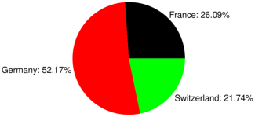

19.5.6 Gaussian window function
The
gaussian_window
command applies the Gaussian window function to a sequence or its segment.
gaussian_window
takes one mandatory argument and one to three optional arguments:
v
, a real vector with length
n
.
Optionally, one of:
α, a real number not larger than 0.5 (by default, α=0.1).
m
,
N
⟨,α⟩, a sequence of two integers and optionally a real number α≤ 0.5 (by default,
m
=0 and
N
=
n
).
gaussian_window
returns the elementwise product of [
v
m
,
v
m
+1
,…,
v
m
+
N
−1
] and the vector
w
of length
N
defined by
w
k
=exp
⎛
⎜
⎜
⎜
⎜
⎜
⎝
−
1
2
⎛
⎜
⎜
⎝
k
−(
N
−1)/2
α (
N
−1)/2
⎞
⎟
⎟
⎠
2
⎞
⎟
⎟
⎟
⎟
⎟
⎠
,
k
=0,1,…,
N
−1.
Example
listplot
(
gaussian_window
([1
$1000
],0.4))
